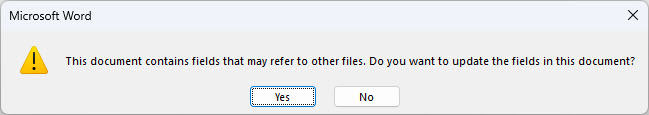

Known Issues
This page documents known platform and framework limitations that affect AsBuiltReport functionality. These are issues that cannot be resolved through troubleshooting or configuration changes.
Need Help Troubleshooting?
For guidance on diagnosing and resolving report generation problems, see the Troubleshooting page. Use this page to understand platform-specific limitations and workarounds.
Framework and Platform Limitations
Table of Contents Missing in Word Reports
Affects: Microsoft Word (DOCX) format reports on all platforms
Issue: When opening a Microsoft Word report for the first time, the Table of Contents appears empty.
Cause: Microsoft Word displays a security prompt asking to update fields when opening documents with dynamic content. If you click "No", the TOC fields remain unupdated and the Table of Contents stays empty.
Resolution:
-
When opening the report for the first time, you'll see this prompt:

-
Always click "Yes" to update the document fields
- Save the document after the TOC is populated
- Future opens of the saved document won't show the prompt
Important
Clicking "No" prevents the Table of Contents from populating. If this happens, close the document, reopen it, and click "Yes" when prompted.
Images Missing on Linux and macOS
Affects: All report formats on Linux and macOS operating systems
Issue: Reports generated on Linux or macOS do not include any images, charts, or diagrams. These elements appear as blank spaces or are omitted entirely.
Cause: Due to breaking changes in .NET 6, the System.Drawing.Common library that AsBuiltReport uses for image processing is now only supported on Windows.
Status: Not supported - this is a .NET platform limitation, not an AsBuiltReport bug.
Workarounds:
- Option 1: Generate reports on a Windows system if images are required
- Option 2: Use Linux/macOS for report generation but accept that images won't be included
- Option 3: Use Windows Subsystem for Linux (WSL2) with PowerShell 7+ on Windows for Linux-style workflow with image support
Platform Recommendation
For production reports that require images, charts, and diagrams, we recommend generating reports on Windows systems. Text content, tables, and all other report sections work correctly on Linux and macOS.
PowerShell Version-Specific Issues
PowerShell 5.1 TLS 1.2 Requirement
Affects: PowerShell 5.1 on Windows (older systems)
Issue: Module installation from PowerShell Gallery may fail with TLS/SSL connection errors.
Cause: PowerShell 5.1 defaults to TLS 1.0, but PowerShell Gallery requires TLS 1.2.
Resolution: Run this command before installing modules:
[Net.ServicePointManager]::SecurityProtocol = [Net.SecurityProtocolType]::Tls12
Add this to your PowerShell profile for permanent configuration.
Report Module-Specific Issues
Each report module may have its own known issues and limitations based on:
- Target platform API limitations
- Vendor-specific PowerShell module dependencies
- Version compatibility constraints
- Required permissions and access levels
Where to Find Module-Specific Issues:
- Report Module README - Each module's GitHub repository includes a README with known limitations
- GitHub Issues - Check the Issues tab in the module's repository
- Module Documentation - Some modules include separate documentation for known issues
Report Module Repositories: Visit the AsBuiltReport GitHub organization to find specific report modules.
Known Limitations
Read-Only Data Collection
Limitation: AsBuiltReport only collects and reports information - it cannot modify configurations or remediate issues.
Rationale: AsBuiltReport is designed as a documentation and auditing tool with read-only access to prevent accidental changes to production systems.
Impact: Health checks can only highlight configuration issues - they cannot fix them automatically.
Report Generation Performance
Limitation: Large environments with thousands of objects may take considerable time to document (30+ minutes for very large infrastructures).
Cause: Report modules collect extensive information through API calls and queries, which accumulate for large environments.
Mitigation:
- Use lower InfoLevel settings to reduce detail and improve performance
- Schedule reports during off-peak hours
- Consider generating reports for specific subsystems rather than entire environments
See Best Practices - Report Generation for optimisation tips.
Reporting New Issues
If you encounter an issue not listed here:
- Check the Troubleshooting page - Troubleshooting Guide covers solvable problems
- Search existing issues - Check if the issue is already reported:
- AsBuiltReport.Core Issues
- Specific report module repository issues
- Ask the community - GitHub Discussions
- Report a new issue - If you've confirmed it's a new issue, create a detailed issue report including:
- AsBuiltReport.Core version
- Report module version
- PowerShell version (
$PSVersionTable) - Operating system
- Error messages and verbose output
- Steps to reproduce
Next Steps
- Troubleshooting Guide - Diagnose and resolve report generation problems
- FAQ - Common questions answered
- Report Modules Overview - Browse available report modules
- GitHub Discussions - Community support